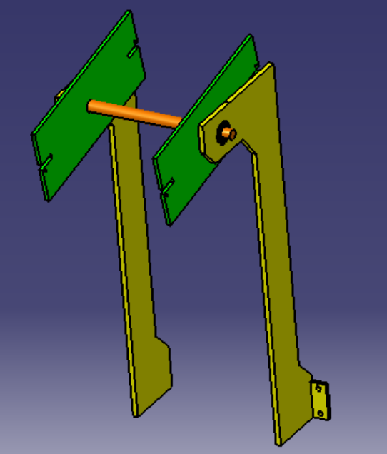

Projet Gentherm — Support de double bobine
Conception mécanique & amélioration industrielle · CATIA V5
Contexte : Projet réalisé dans le cadre du stage de fin d’études chez Gentherm Tanger, portant sur l’étude et l’amélioration d’une machine de couture industrielle (Sewing) utilisée dans la production automobile.
Objectif : Concevoir un support double bobine pour améliorer le système de support de bobine de la machine.
Travail réalisé :
- Analyse du système existant et identification des causes d’arrêts liés au changement de bobine.
- Conception et modélisation 3D du support double bobine sous CATIA V5.
- Assemblage numérique et réalisation des plans techniques de fabrication.
- Validation mécanique par analyse RDM (étude de conception).
- Réalisation du support à partir des plans CATIA V5 ; fabrication effectuée chez 4D Industriel.
État d’avancement : le support double bobine a été conçu et fabriqué, mais il n’a pas été monté sur la machine, testé ni validé en conditions réelles.
CATIA V5
Analyse fonctionnelle
Mise en plan
Prototypage
Bras robotisé articulé — Modélisation CATIA V5
Projet Bras Robotisé
Projet de fin d’études BTS · CATIA V5
Contexte : Projet réalisé dans le cadre du BTS en Conception du Produit Industriel, portant sur l’étude et la conception d’un bras robotisé articulé avec griffe.
Objectif : Concevoir une architecture mécanique articulée en intégrant les contraintes de mouvement, d’assemblage et de maintien.
Travail réalisé :
- Conception des pièces mécaniques sous CATIA V5.
- Modélisation 3D des sous-ensembles du bras et de la griffe.
- Assemblage mécanique complet et vérification des contraintes géométriques.
- Élaboration des plans techniques et du dossier de projet.
CATIA V5
Conception 3D
Assemblage
Robotique
Smart Stock (IA) — Gestion intelligente du stock
Projet Smart Stock (IA)
Projet académique · Intelligence artificielle
Contexte : Projet académique portant sur le développement d’un système intelligent de gestion de stock basé sur l’intelligence artificielle, afin d’améliorer les prévisions de la demande et d’optimiser les niveaux de stock des petites et moyennes entreprises.
Objectif : Concevoir une application capable d’analyser les données de stock, de prédire les besoins futurs et d’aider à la prise de décision pour réduire les ruptures et les surstocks.
Travail réalisé :
- Analyse des besoins fonctionnels.
- Développement de l’application avec Python et création de l’interface utilisateur avec Streamlit.
- Gestion de la base de données MySQL et traitement des données avec Pandas.
- Analyse des ventes et prédiction de la demande avec Random Forest.
- Analyse des avis clients (analyse de sentiment).
- Alertes de rupture de stock.
- Rédaction du rapport et présentation du projet.
Python
Streamlit
MySQL
Pandas
Random Forest
IA
TP MATLAB & Simulink — Modélisation et simulation
TP MATLAB / Simulink
Travaux pratiques · MATLAB & Simulink
Contexte : Travaux pratiques réalisés durant la formation autour du calcul scientifique, de la modélisation dynamique et de la simulation sous MATLAB et Simulink.
Objectif : Implémenter des scripts de calcul, construire des schémas-blocs sous Simulink et interpréter les courbes de réponse des systèmes étudiés.
Travail réalisé :
- Écriture et exécution de scripts MATLAB.
- Modélisation et simulation de systèmes sous Simulink.
- Tracé et analyse graphique des résultats numériques.
- Rédaction des comptes rendus de travaux pratiques.
MATLAB
Simulink
Simulation
Calcul scientifique
Robot de soudage — Conception 3D sous CATIA V5
Projet Robot de soudage
Conception mécanique · CATIA V5
Contexte : Projet académique de conception mécanique portant sur la modélisation d’un robot de soudage destiné à un poste industriel automatisé.
Objectif : Modéliser les différents organes mécaniques du robot et assurer leur assemblage cohérent sous CAO.
Travail réalisé :
- Modélisation 3D des composants mécaniques sous CATIA V5.
- Assemblage numérique des sous-ensembles articulés.
- Vérification des ajustements et des interférences.
- Élaboration des plans techniques d’ensemble et de définition.
CATIA V5
Conception 3D
Assemblage
Mise en plan
Extracteur de roulements — Conception CATIA V5
Projet Extracteur de roulements
Conception mécanique · CATIA V5
Contexte : Projet de conception d’un outillage mécanique destiné au démontage de roulements lors d’opérations de maintenance.
Objectif : Concevoir un mécanisme d’extraction fonctionnel, simple à mettre en œuvre et adapté aux contraintes de montage/démontage.
Travail réalisé :
- Analyse fonctionnelle du besoin d’extraction.
- Conception et modélisation 3D des pièces sous CATIA V5.
- Réalisation de l’assemblage mécanique complet.
- Édition des plans techniques de fabrication.
CATIA V5
Conception mécanique
Assemblage
Mise en plan
Mécanisme de serrage rapide — Conception CATIA V5
Projet Mécanisme de serrage rapide
Conception mécanique · CATIA V5
Contexte : Projet académique de conception d’un dispositif de bridage et de serrage rapide pour le maintien de pièces mécaniques.
Objectif : Concevoir un mécanisme assurant un maintien rapide et stable d’une pièce pendant une opération technique.
Travail réalisé :
- Analyse fonctionnelle et cinématique du dispositif de serrage.
- Modélisation 3D des composants sous CATIA V5.
- Assemblage du mécanisme et contrôle du débattement.
- Réalisation des plans techniques associés.
CATIA V5
Analyse fonctionnelle
Assemblage
Mise en plan